Utah Mammoth vs League Performance Analysis
1. Introduction
This analysis evaluates the on-ice performance of the Utah Mammoth (UTA) relative to the rest of the NHL using player-level data. The objective is to identify areas where Utah outperforms or underperforms league norms, with a focus on both counting statistics (e.g., goals, shots) and rate-based or percentage metrics (e.g., shooting percentage, faceoff win percentage).
From a roster-building perspective, identifying areas of underperformance can provide insight into positional needs and potential targets for drafting or trades. All comparisons are made using median values, which reduces the influence of outliers and better reflects the typical player contribution.Positive values indicate Utah is above the league median, while negative values indicate underperformance.
2. Data and Methodology
2.1 Data Source
The data were scraped from the NHL API and include player in-season statistics from the 2000–2001 through 2024–2025 seasons. Each season is treated independently, meaning that a player appearing in multiple seasons is recorded as a separate observation for each season.
The dataset includes skaters only (goalies are excluded) and contains metrics specific to player position. Positions are categorized as * Centers (C): primarily takes faceoffs, plays both offense and defense * Left Wings (L) and Right Wings (R): primarily offensive roles, responsible for scoring and assisting. * Defensemen (D): primarily defensive, preventing opponents from scoring
2.2 Metric Definitions
Metrics are divided into two categories: counting metrics and percentage (rate-based) metrics. Definitions are provided below for clarity.
Counting Metrics
Goals (G):
The total number of goals scored by a player during a season.Assists (A):
The total number of assists recorded by a player, including both primary and secondary assists.Points (P):
The sum of goals and assists (P = G + A). This metric captures overall offensive contribution.Shots (S):
The total number of shots on goal taken by a player.Penalty Minutes (PIM):
The total number of minutes a player spends penalized. Higher values may reflect physical play, but can also indicate discipline issues. Penalty minutes is also different from the rest of the metrics in that a higher value is to be considered worse.Plus/Minus (+/−):
A measure of on-ice goal differential. A player receives:- +1 when on the ice for a goal scored by their team, and
- −1 when on the ice for a goal scored by the opposing team.
This metric serves as a rough indicator of two-way impact but is influenced by team context.
Percentage Metrics
Shooting Percentage (S%):
The percentage of shots on goal that result in goals, calculated as: \([ \text{Shooting Percentage} = \frac{\text{Goals}}{\text{Shots}} \times 100\)] This metric reflects scoring efficiency rather than shot volume.Faceoff Win Percentage (FOW%):
proportion of faceoffs won by the player. Particularly relevant for centers, as they primarily take faceoffs. Winning a faceoff gives your team possession and a chance to score.
2.3 Handling Missing Values
For each metric group, players with missing values are removed only for that specific analysis. This ensures that: - Faceoff metrics are not distorted by non-centers, and - Shooting percentage is calculated only where meaningful.
This approach preserves as much data as possible while maintaining valid comparisons.
2.4 Definition of the Performance Gap
All reported gaps are calculated as:
Utah Mammoth median − League median
Positive values indicate Utah players outperform the league median, while negative values indicate underperformance. For Penalty Minutes, interpretation differs, as higher values may reflect either physical play or increased time spent penalized.
3. Team-Level Comparison: Utah vs League
3.1 Counting Metrics
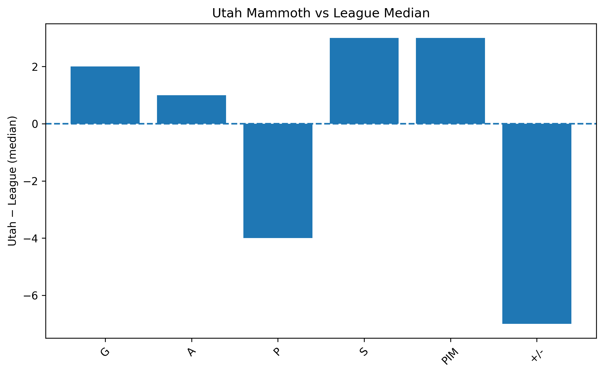
This figure compares Utah skaters to the league median across core box-score statistics.
Key observations: - Utah underperforms the league median in overall scoring output, particularly in points and plus/minus, indicating weaker offensive production and goal differential at the team level.
3.2 Percentage Metrics
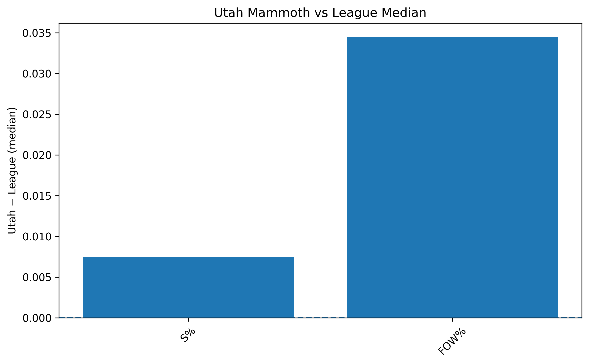
This figure focuses on efficiency-based metrics.
Key observations: - Utah outperforms the league median in percentage-based metrics, suggesting reasonable efficiency despite lower overall volume.
To better understand the source of these team-level trends, the following sections examine forwards and defensemen separately.
4. Forward Group Analysis
Forwards include Centers (C), Left Wings (L), and Right Wings (R).
4.1 All Forwards: Counting Metrics
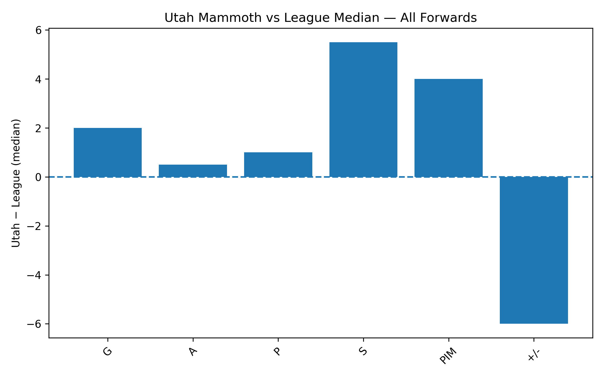
Key observations: - The only counting metric in which Utah forwards underperform is plus/minus and penalty minutes. - Metrics such as shots, goals, and points show stronger performance relative to the team-level comparison, suggesting that forwards are not the primary source of Utah’s overall scoring deficit.
4.2 All Forwards: Percentage Metrics
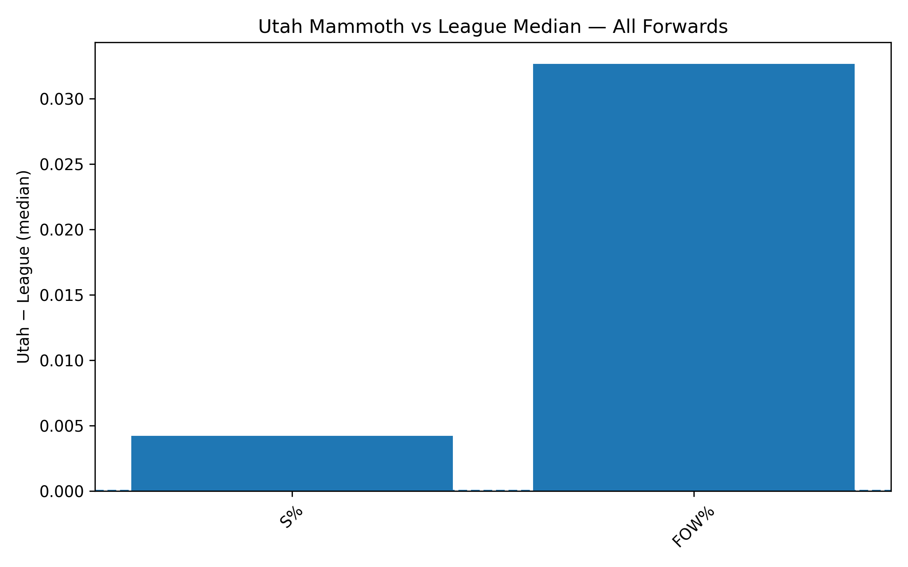
Key observations: - There are no substantial differences between Utah forwards and the league median in efficiency-based metrics.
5. Position-Specific Analysis
5.1 Centers (C)
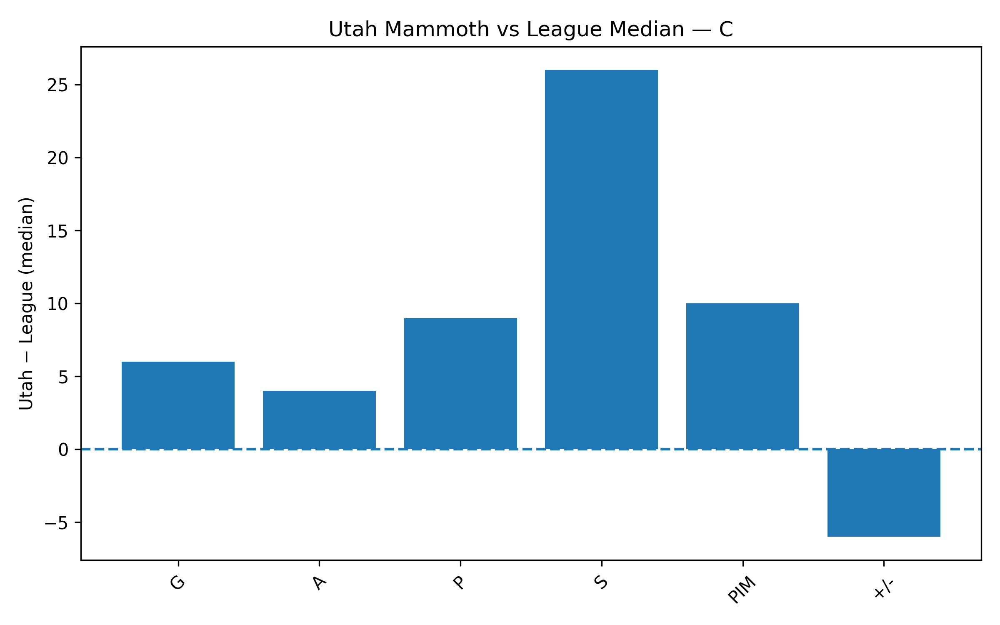
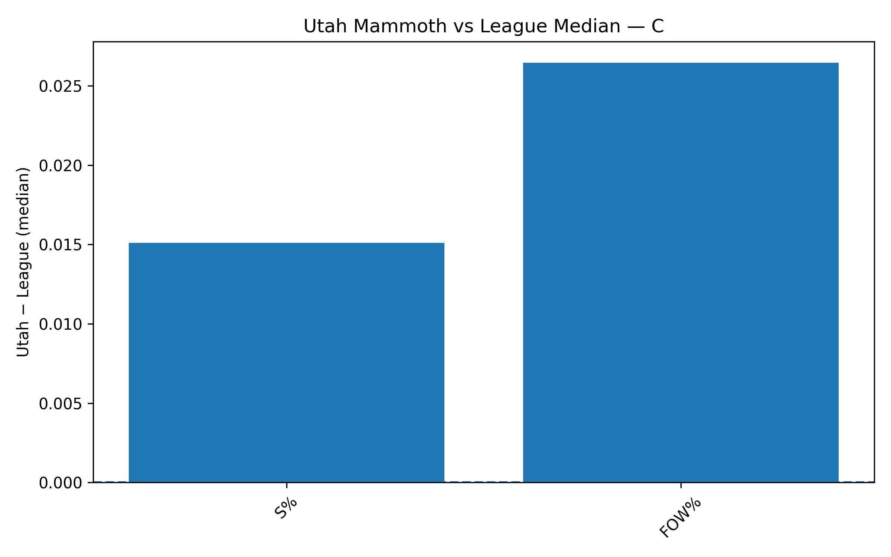
Key observations: - Centers underperform the league primarily in plus/minus, with no meaningful deficits in other metrics.
5.2 Left Wings (L)
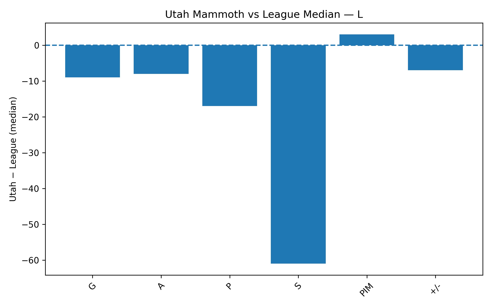
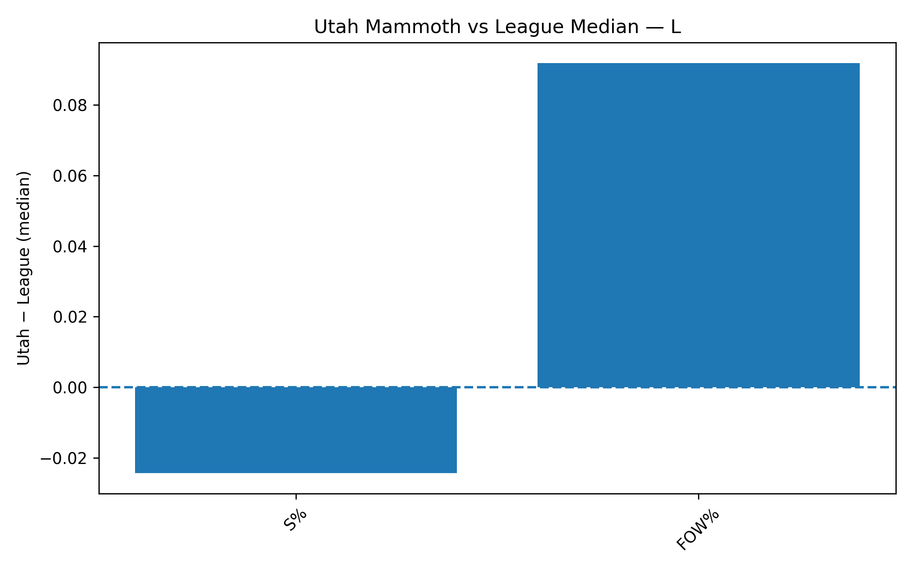
Key observations: - Utah’s left wings outperform the league only in faceoff win percentage.
Shot volume for left wings is well below the league median, and the limited number of shots taken converts inefficiently.
Among all positions, left wing appears to be the clearest area of need, particularly in generating offensive opportunities.
5.3 Right Wings (R)
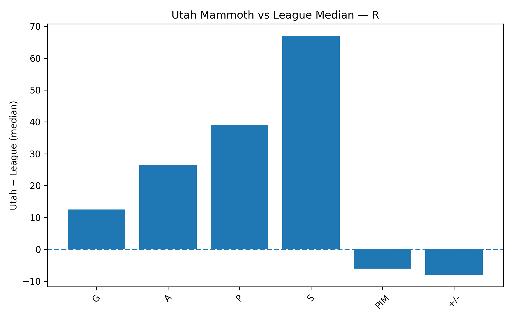
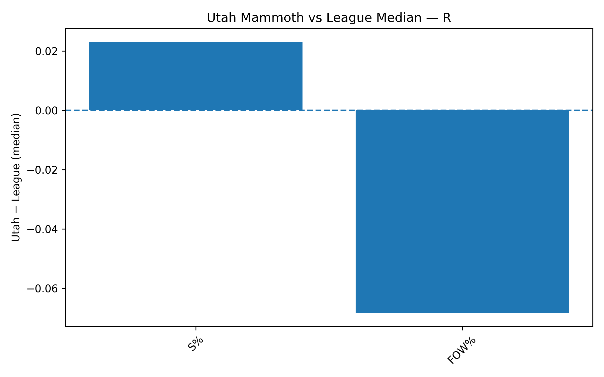
Key observations: - Utah right wings perform above the league median in nearly every metric except faceoff win percentage, indicating strong overall contribution from this position group.
5.4 Defensemen (D)
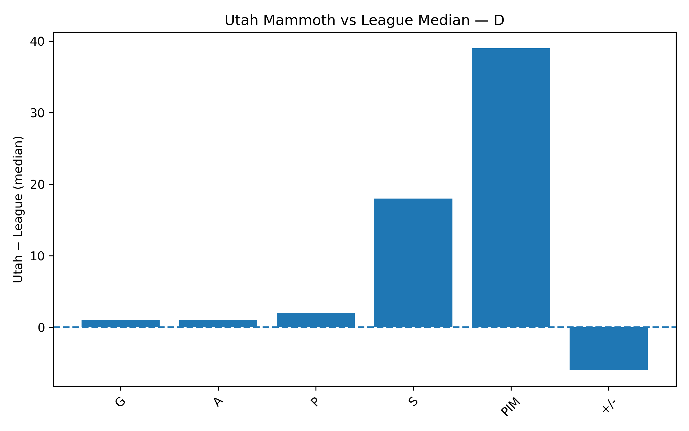
Key observations: - Utah defensemen stand out primarily in penalty minutes, suggesting a more physical or aggressive style of play.
However, defensemen underperform in plus/minus, indicating potential issues in preventing scoring chances.
Shot production from defensemen is closer to the league median than for centers and is comparable to right wings.
Percentage-based metrics are excluded due to negligible differences in shooting percentage and missing faceoff data.
6. Shots vs Plus-Minus
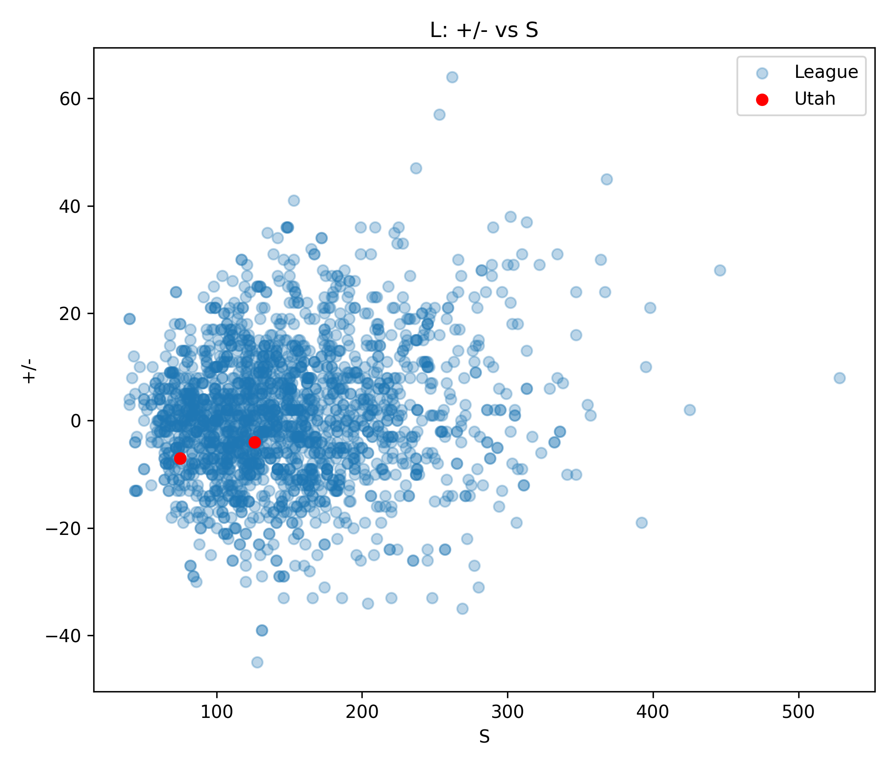
This scatterplot examines the relationship between shots and plus/minus for left wings.
- Gray points represent league players
- Red points represent Utah Mammoth players
- X axis is the shots taken by a player, Y axis is the associated +/- of that player
Key observations: - Utah left wings cluster at low shot totals and lower plus/minus values, reinforcing earlier findings that this position group struggles to generate offense and positively impact goal differential.
7. Summary and Takeaways
7.1 Strengths
- Utah performs well in faceoff win percentage, shot generation, and goal scoring.
- Centers and right wings generally exceed league median performance.
- Defensemen perform close to league average in most metrics.
7.2 Weaknesses
- Left wings significantly underperform across most metrics.
- Plus/minus remains a persistent weakness across multiple position groups.
- Defensive performance suggests issues with suppressing opponent scoring.
7.3 Roster Implications
- Using the accompanying Streamlit application and filtering for forwards, several players were identified who perform above league average without representing top-tier salary commitments:
- Kirill Kaprizov
- Jake DeBrusk
- Patrik Laine
- Nick Paul
- Lucas Raymond
- Kirill Kaprizov
8. Limitations and Next Steps
Limitations:
Median values do not capture elite, top-end talent.
The league baseline includes Utah players.
Contextual factors such as usage, teammates, and competition are not modeled.
Next steps:
Exclude Utah from the league baseline.
Normalize performance gaps using percentages or z-scores.
Incorporate advanced metrics such as expected goals (xG).
Add player age data to analyze performance across career stages.